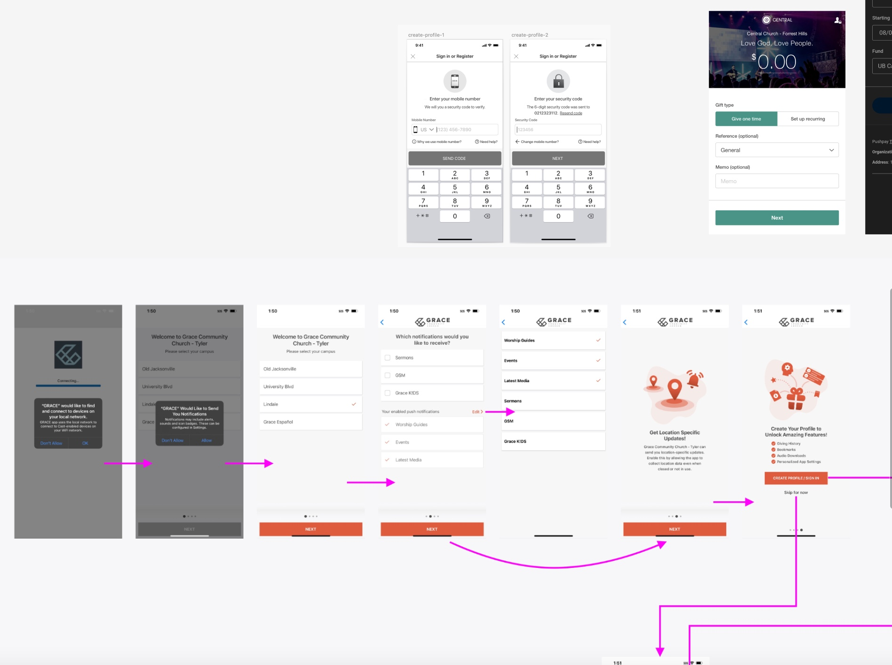
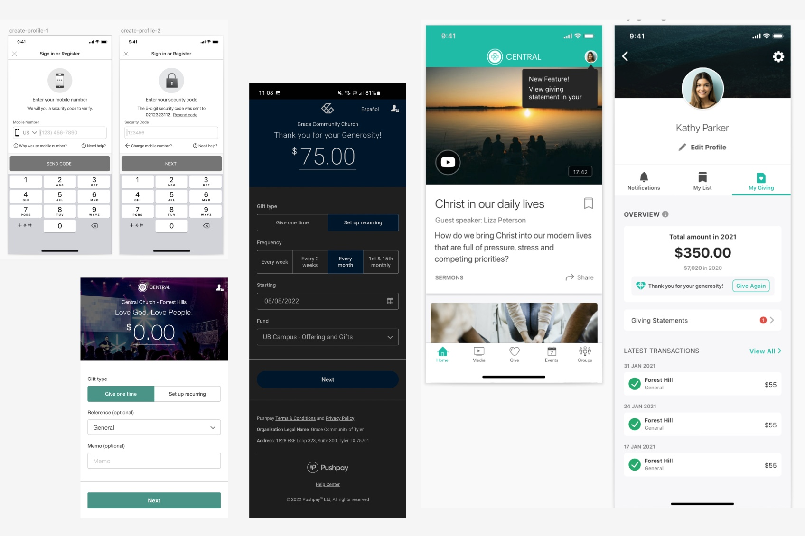
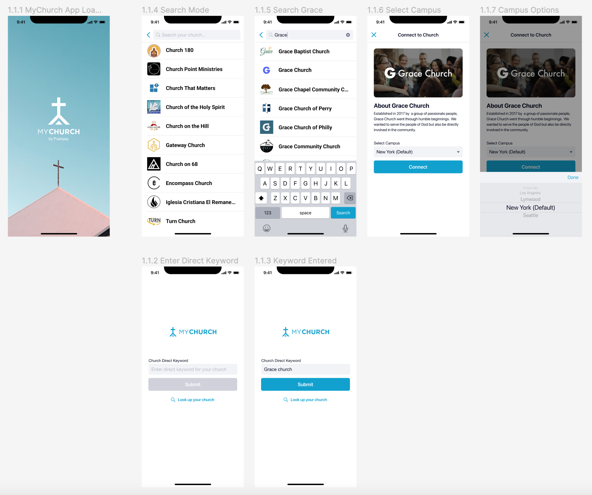
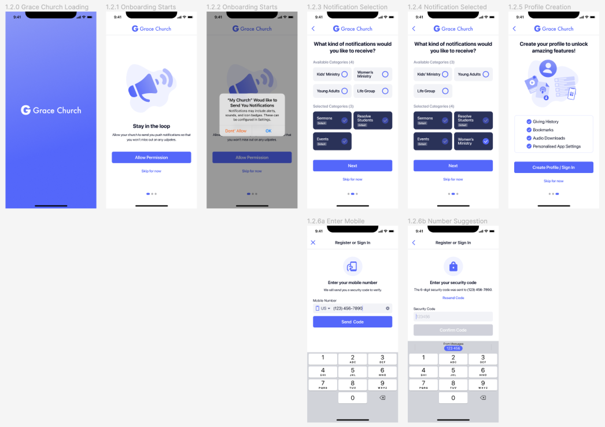
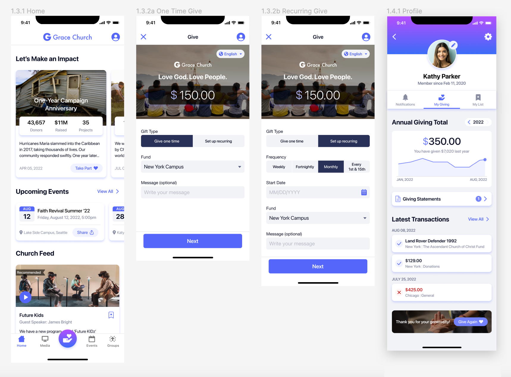

My Church App is a consolidated app for multiple churches. Many church community members get connected with their churches and members via the app. Since the design looks outdated and challenge my Figma prototyping skills, I have decided to do design overhaul for the app within 4 days. Firstly I have gathered current app screens and decided where I want to make improvements. Even though it has been quite a while since I have worked for Pushpay, I still remembered what I would definitely improve when redesigning.
 The splash screen needed to be refreshed so badly. As the screen decides what the first impression will be for users, it has to look attractive and resonate with church users. Therefore, I have added a calm and peaceful looking church photo to the page. One of the biggest UX issue with the current app was that there is no easy way to distinguish a way to use church direct keyword and to search for churches in case users don't know the keyword. I also made the "Connect" page more branded and informative for churches for two reasons: 1.users learn about the church that they are about to connect 2.making sure that the church is the right one for them.
Onboarding screens has been redesigned not long ago comparing to other screens. However, I still saw opportunities to improve the usabiliy of the screens. The biggest change is that I introduced a splash screen for churches so it would make user feel they are successfully connected to their churches and it makes the brand transition smoother (MyChurch App brand -> Church brand).
For the Home screen I have brought all the legacy works together. During my time at Pushpay, I have worked on design principles with other designers. The goal of the design principles was to use them for redesigning app components so that we could create a design system. The cards were redesigned and that was where I left from the project. I have carried the legacy over in this personal redesign project and expanded the work to create new Giving and redesign Profile screens. I remember when I designed the Profile screen, it was challenging to have the Give Again part within the Giving Total card. I am very proud that in this redesign, I have found a much better place to have it (at the bottom of the screen with a inspiring image).
